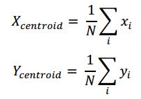
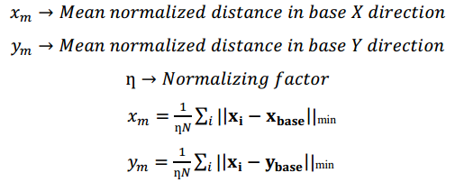

In this project I tried using classical geometry based computer vision for detecting 2-d colored brontosaurus. Figure 1
depicts the target object that has dimensions of 8.4X6.1. Due to its highly 2-dimensional shape, the thickness can be
omitted from our models (4mm).
Triangulation is a method that is generally used for pathfinding algorithms. If there is a set of points in a plane
and the path has to be found to traverse from one point to the other, triangulating these points helps find the
required path. One of the triangulation methods, Delaunay triangulation, can be used for object detection.
Delaunay Triangulation: The triangulation, f(t), of a set of discrete points P in a plane, is said to be Delaunay
Triangulation iff no point in P is inside or on the circumcircle of any triangle of f(t), except the triangle
vertices themselves. If this condition is fulfilled, then the triangulation is always unique for the set of points [1].
For instance, if there are 4 points as shown below, there are two possible ways of forming triangles as shown in
Fig 3(b) and 3(c). However, if the circumcircles are drawn for both cases, it can be seen that the latter does
not satisfy the Delaunay Triangulation criterion.
This triangulation method gives a unique form to the object, which could be used to find few intrinsic image properties
of the object, otherwise featureless in this case. So the basic algorithm used in this technique to detect the object is
as follows.
a. Color segmentation
b. Finding contours
c. Delaunay Triangulation
d. Condition for object detection
Intuitively it can be seen that, this method is dependent on the geometry of the object. Since the image is practically
featureless, the object geometry is the most important information that can be used for its detection.
Color Segmentation:
The brontosaurus (object to be detected) has uniform color throughout its area, which can be used for finding
the contours in the image. The image is segmented using the HSV color thresholding. HSV stands for Hue,
Saturation and Value. The Hue determines the actual color of the pixel, Saturation gives the amount of gray
value in it and the Value gives the amount of luminance/brightness. The advantage of HSV color thresholding
is that the effect of luminance/brightness can be controlled by keeping the maximum range of V. The thresholded
image is then given to the contour finding function.
Finding Contours:
This function takes a thresholded image and returns any closed contour that is present in the thresholded image.
We have added a small area threshold for considering the contour, meaning that the contour for which the area is
below this threshold would be chopped off from the list. The function returns an array of points for each contour.
For each contour we calculate the centroids given by,

where N is the number of points on the contours. We also sample out 500 points for triangulation.
Delaunay Triangulation:
The set of sampled points of the contours along with the contour centroid are sent as an argument to the function
finding the Delaunay triangles. According to the criterion mentioned above, the triangle coordinates are computed
and stored in an array. Two algorithms for computing the Delaunay triangles have been discussed in [2]. Once the
triangles are formed, we compute the centroids of each triangle as shown in Fig. 4(b).
Condition for Object detection:
Now we have the triangles and the centroids. This is a
unique representation of the object and it defines the geometric
properties of the object. One of the properties that we have used
for our object detection is the distribution of fixed points in the
object. For implementing this algorithm, the first thing that is
done is defining a base axis of the object which would define
the orientation of the object. In order to achieve this the
following algorithm was implemented.
iv. This forms the base x axis and the axis perpendicular
to it forms the base y axis. This is shown in Fig. 4(b)
Once the base axis is set, the next step is to find the mean
normalised distance from the triangle centroid to the base axes.
Once the base axis is set, the next step is to find the mean
normalised distance from the triangle centroid to the base axes.

The above step is done for the model object and the range
of the mean distances are set. The mean is divided by a
normalizing factor in order to make it scale invariant. In our
case we used the maximum distance from the centroid as the
normalizing factor. This computed mean is used for comparison
with the test image and the object detection is done.
It was observed that the value of the mean normalized
distance ranged from 0.4 to 0.8. It can be seen from the Fig. 5
that this method is robust to perspective transformation but not
robust to occlusion. Higher the range of the mean normalized
distance, higher is the is the probability of the object getting
matched. However this increases the chance of false positives
getting detected, as seen in the Fig. 5(e)(f) where a kangaroo
with similar shape is being detected as the brontosaur
[1] Pedro F. Felzenszwalb ‘Representation and Detection of Shapes in Images’, University of Chicago
[2] D. T. Lowe, B. J. Schachter ‘Two Algorithms for Constructing a Delaunay Triangulation’ in International
Journal of Computer and Information Sciences, Vol. 9, No. 3, 1980
[3] OpenCV - https://opencv.org/
{kind=link}
{kind=link}
{kind=link}
{kind=link}
{kind=link}
{kind=link}
{kind=link}